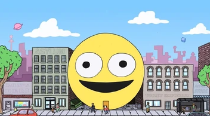
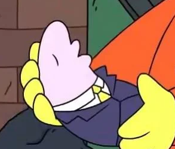
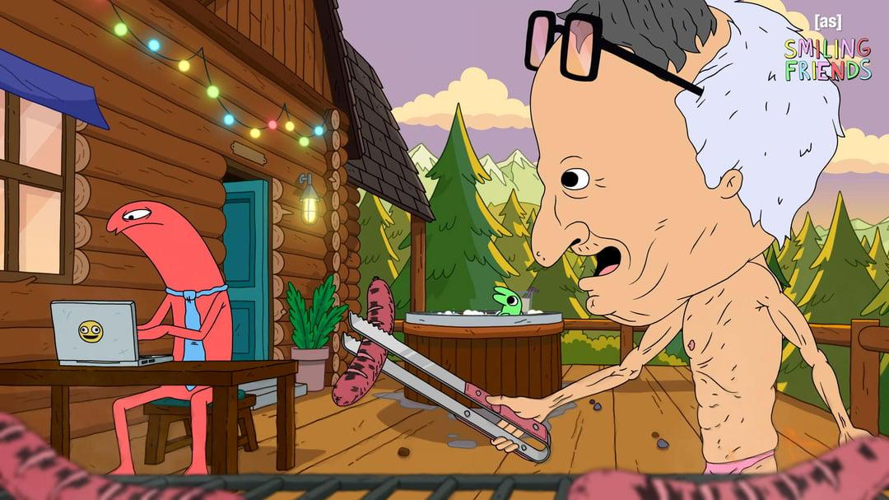

O Sr. Chefe ficou famoso pelo seu jeito bravo e engraçado no comando da empresa Smiling Friends Inc; Uma empresa focada em levar a felicidade e sorrino na face de todos que os ligam.

Curiosidades
Possui um filho chamado Jason que possui 18 anos:

Senhor Chefe possui uma casa de campo onde ele leva seus funcionarios para passar finais de semana.

O sobrenome do senhor chefe começa com M, possivelmente sendo de Meep.